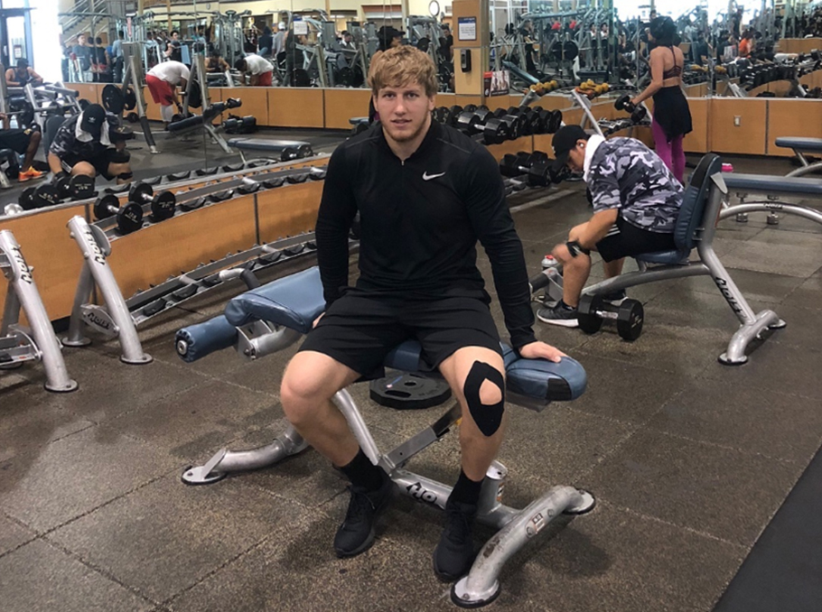
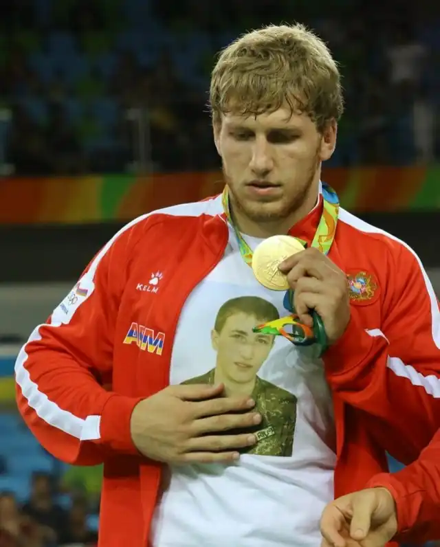

Early Years in Gyumri
Artur Aleksanyan was born in 1991 in Armenia. He grew up in a family of athletes and started wrestling at the age of eight.
From a young age, he impressed coaches with his power and persistence. He quickly became known for his strong work ethic and his ability to remain calm under pressure.


During his teenage years, Artur won múltiples national junior titles and began competing internationally. These early successes helped him build the technical foundation that would define his senior career.
As he moved into senior competition, he kept improving his strength and match strategy, turning setbacks into fuel for even better performances.
His discipline and strength led him to become one of the most respected figures in Greco-Roman wrestling history, and he continues to inspire young athletes across Armenia and beyond.
More info: United World Wrestling Official Site